Hi all,
In previous blogs we looked at analysing CSV files using Langchain and ChatGPT.
This time we will look at some new future tools that have been released that may help analysts around those pesky csv files.
We will look just at the top 25 records in the Sample Superstore data from Tableau.
How to get set up?
Well first you will need an Open API key, I've written previously how you can get this key through signing up to their program. (You get free $5 worth of tokens!) You can sign up on OpenAI.com
We will want to also install the GPT for google sheets add on. You can access it through the link here.
When you install, you will need to sign into your google account associated to Google sheets, and allow the access for chatGPT to run against your file.
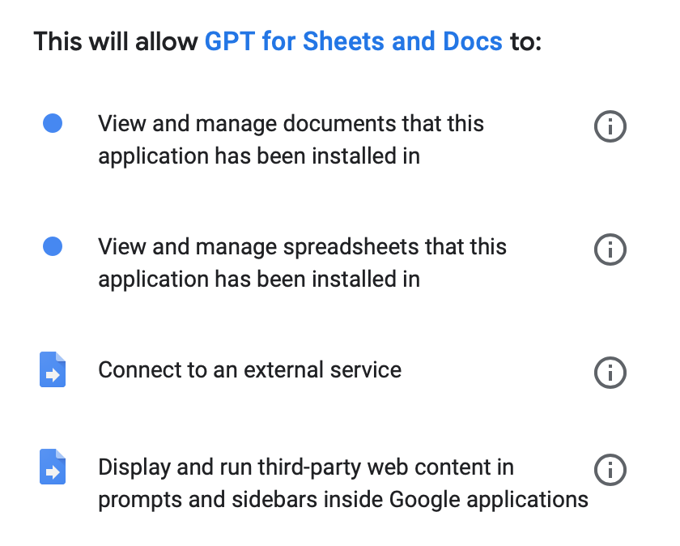
Click through and the set up is complete.
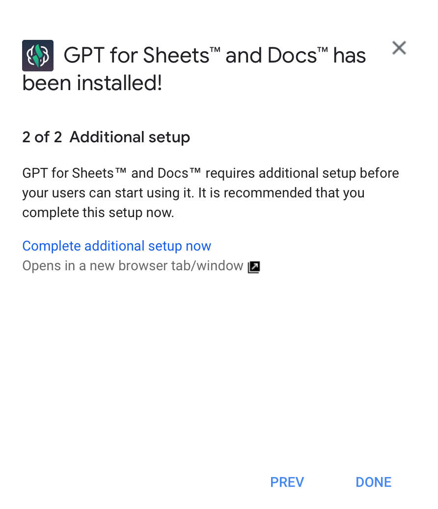
We can then load up a data file. Here I'm looking at the Sample Superstore Orders file - I ended up just reducing the file to 25 rows because I didn't want to take up alot of run time against my free tokens.
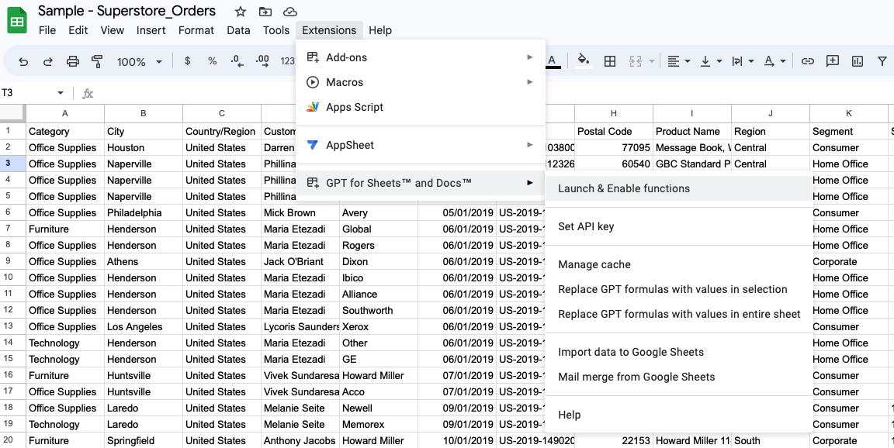
To enable the ability for GPT for sheets to work, go to extensions and find it in the drop down. Click launch and enable functions.
Below are some examples of just some of the things you can do while in your google sheet!
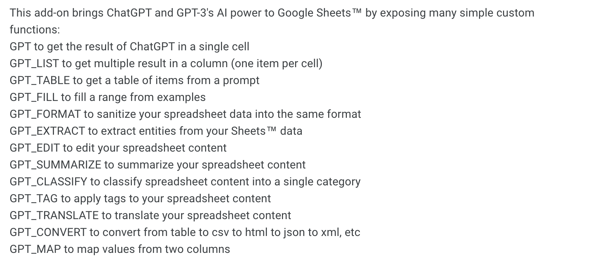
Here it is when it will ask you for your OpenAI API Key. Enter it and click next and we will get through the the prompts page.
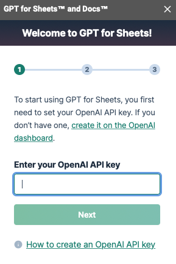
Here are a list of just some of the different functions that we can do using GPT.
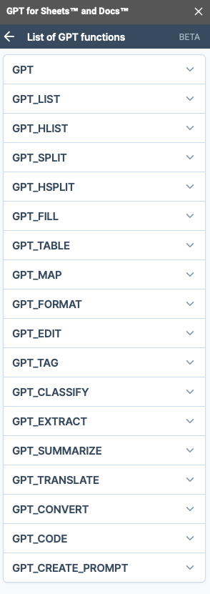
Lets do a few basic functions.
Dates.... They are always a tricky one.
=GPT_FORMAT(L2,"DD month YY","DD/MM/YYYY",0.9)
What this formula will do, is looks at the respective column, asks for the target format, and then what the source format column will be. (This would be optional if you have lots of different date formats). Temperature is a measure of accuracy (Between 0-1) and tokens is to ensure you don't use all your token credits up.
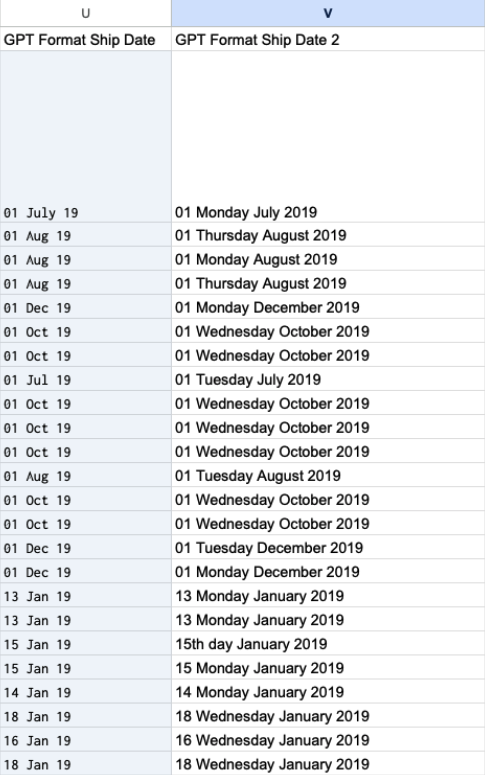
The right hand column is
=GPT_FORMAT(U2,"DD day Month Year","DD MMM YY",0.9)
This may not wow you but it may add some productivity gains in day to day work for those using google sheets.
Lets look at some other examples. Can we find the code required to extract the first name from a full name field.
=GPT_CODE("extract the first name from a customer name field with a full name in","python",0.8)
Here is the prompt I put into excel.
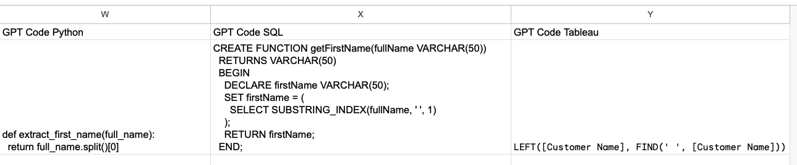
Well lets check.
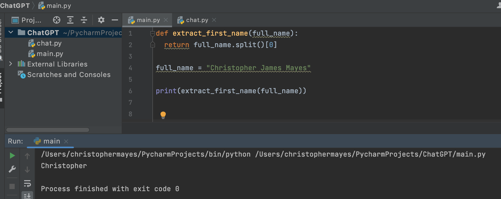
I've copied out the function and tested it against my name. Seems to work fine!
What about changing the word Python to Tableau?
Well not entirely correct in this case, but I can imagine it is more accurate for actual coding languages. You'll see by comparing the prompt answer given above with my answer below the find tool had the customer name and the blank string field the wrong way round!
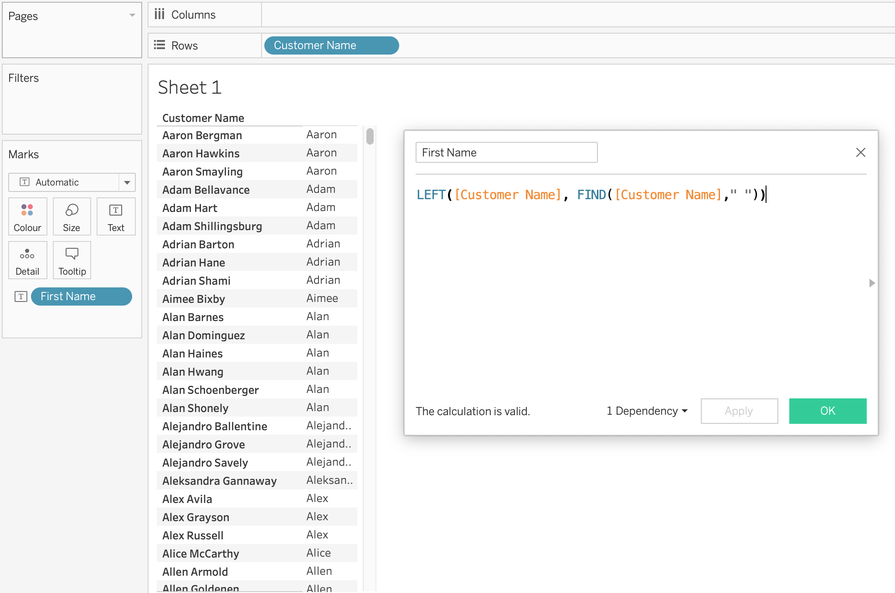
Still, not bad going and easy to amend.
Side note, I hadn't really ever used FIND in Tableau?? Was pleasantly surprised by its positioning power.
Okay lets look at one final simple example of the ChatGPT Sheets Extension. Can we generate a formula in excel?
I want to take the discount price and apply it to the sales value.
Below I write in my prompt.
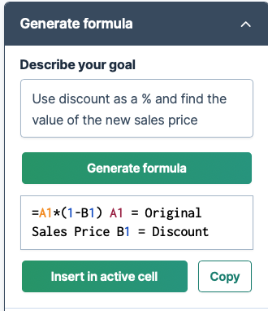
By then adding a sales column with the new formula it has created our discounted prices!
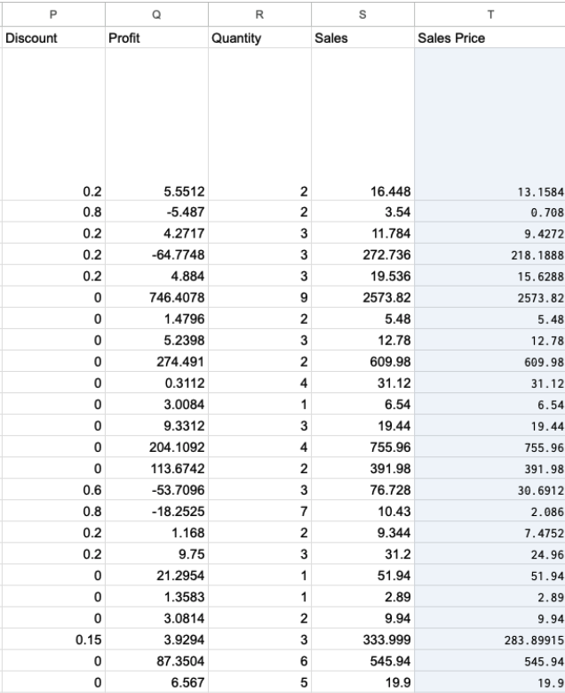
Lets end with a quick final translation example.
=GPT_TRANSLATE(A2,B2)
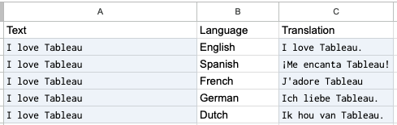
What are my overall thoughts?
With over 15 different functions at a basic level this will really help business analysts be able to do their job in a more efficient way. I think it adds a good middle ground for formatting information, creating subsets and analysing data that you may have had to either create more tricky excel formulas for or written code for. Whether in ChatGPT or within this add on, it certainly has helped me debug code a lot quicker than searching online for answers.
It does however come with limitations, whilst we are in such a growth phase of AI - the field will be littered with mistakes and excel document responses from chatGPT will be no different from that - and some of the other functions this extension offered I found more challenging to adopt.
Overall, the future is bright and I suspect that this small demo of getting this extension added and running a few queries is a drop in the ocean of what's to come.
Check it out if you have some spare time and let me know if your organisation has started to use AI advancements in your job roles. Would love to learn more from you.
That's it for this week, catch you soon.
LOGGING OFFCJ